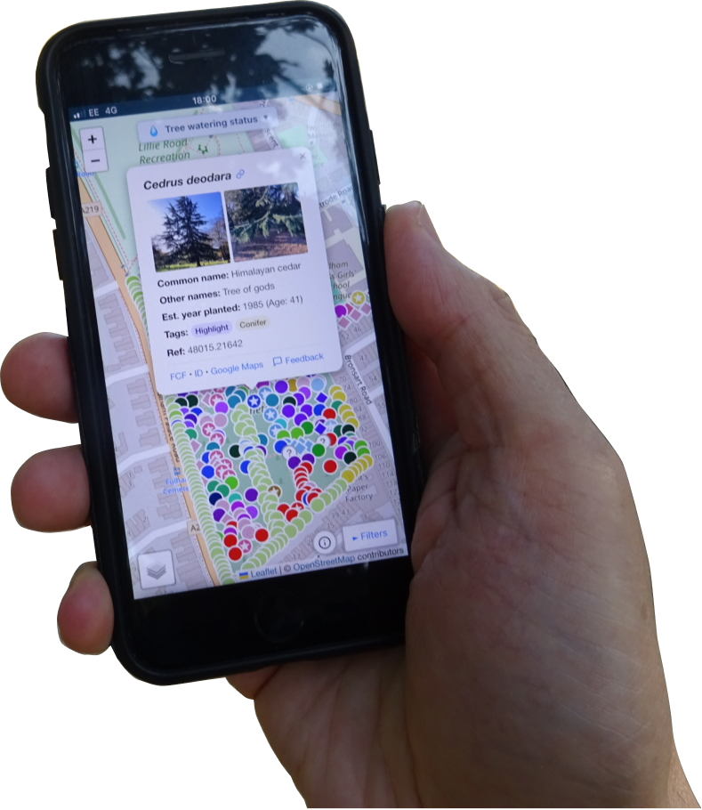

A free kit that lets any "Friends of" group create their own tree map — browse, photograph, and identify every tree, usable on phone or desktop.

Park-treemap started as the interactive tree map at Fulham Cemetery. It's now a free kit any "Friends of" group can use to build their own.
All tree records live in a Google Sheet you own. Photos are stored in your GitHub repository. No subscription, no vendor lock-in — just your data, in your hands.
The map works on any device as an installable progressive web app, so volunteers can add trees and photos from their phone while walking the park.
Built for volunteer groups, not developers.
Tap a location on the map or use your phone's GPS to place a tree exactly where you're standing. No laptop needed.
Attach up to 4 photos per tree — taken on the spot or chosen from your roll. View them in a full-screen lightbox.
Filter by scientific name, common name, condition, form, or tag. Share a link that preserves your exact filter selection.
Tree markers are colour-coded by genus automatically, so you can see species clusters at a glance.
Flag new arrivals, highlight notable trees, and mark unidentified specimens — each with its own distinct marker style.
Filter the map by month to see which trees were surveyed or changed in a given season.
Editing is restricted to invited members. Enrol a device with a one-time magic link — no accounts or passwords.
Works as a progressive web app — no app store required. Install it to your home screen on iOS or Android in one tap.
Add your own app icon, park description, and contact links. Use your group's own domain name as the map URL.
Fork park-treemap on GitHub into your group's account. GitHub Pages publishes it instantly.
Make a copy of the Google Sheet template. This becomes your tree database — you own it entirely.
A one-click Google Apps Script connects your sheet to the map and handles photo uploads via GitHub.
config.jsSet your park's name, location, colours, and spreadsheet ID. Your map is live.
A growing network of community tree maps in London.
Park-treemap is designed so that a volunteer group can run a professional-quality tree map with no ongoing costs and no dependency on any external service beyond free tiers.
If this project ever stops being maintained, your map keeps working — because it's just a static HTML file reading from a spreadsheet you own.
Full setup instructions are on GitHub. Questions? Get in touch with Fulham Cemetery Friends.